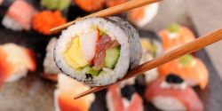
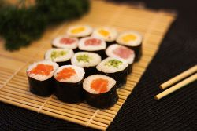
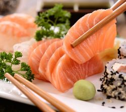
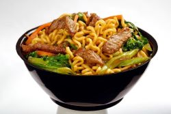
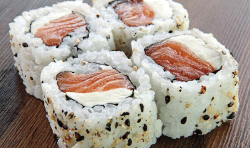
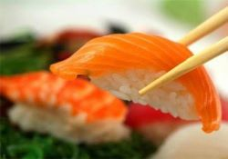
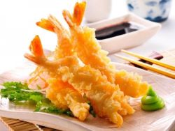
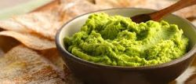
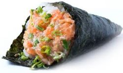

Sem sombra de dúvida, o Sushi é um dos nomes de comida japonesa mais conhecidos em todo o Brasil. Basicamente, este é uma receita feito com arroz que recebe o tempero de vinagre e uma fatia de peixe cru como cobertura. Sushi ainda pode ter o acompanhamento de frutos do mar ou com algas. Além disso, existem até outras versões, como o Makizushis (Uramaki enrolado por fora) e o Hossomaki (enrolado fino).
Como citado anteriormente, esta receita conta com arroz e recheio de alga marinha. O termo “hosso” significa fino e o restante “maki” equivale a “enrolado”. Portanto, é algo enrolado e fino. É importante salientar que você pode se deparar com nomes de comida japonesa distintos para esse mesmo prato. Isso acontece porque a nomenclatura muda em função do recheio. Recheio de salmão? Shake Maki. Pepino? Kapa Mami. Atum? Tekka Maki. E assim por diante.
Esta é uma opção com fatias bem fininhas de peixe cru ou frutos do mar. Com diversas possibilidades de peixes para compor a receita, há ainda variações nos cortes. Você pode se deliciar com peixes oriundos de água salgada, ou seja, do mar, bem como de água doce, isto é, peixes de rios e de lagoas. Além disso, há receitas de sashimi com lula, salmão, atum, camarão, polvo, entre outros. Geralmente, esse prato recebe o tempero de shoyu ou de raiz forte, o famoso Wasabi.
O Yakisoba é outro prato da culinária japonesa bastante adorado pelos brasileiros. Esta é uma versão de macarrão ligeiramente “aguada”, que acompanha molho shoyu e alguns legumes. Ele ainda é feito tanto com frutos do mar quanto com carnes. Outro ponto positivo do Yakisoba é o seu poder nutritivo aliada ao sabor bastante agradável. Assim, se apresenta como uma ótima escolha para quem está se adaptando a cozinha japonesa.
A robata pode ser considerada uma espécie de espetinho de carne, peixes ou legumes preparado na grelha. Há ainda uma variação com frango, chamada de “Yakitori”. “Yaki” é o mesmo que grelhado e “Tori” equivale a frango. Portanto, o nome desta variedade de Robata não deixa dúvidas, não é? Um delicioso grelhado de frango! Esse alimento pode ser consumido tanto puro ou com acréscimo de molho. Osingredientes selecionados precisam grelhar de ambos os lados para uma refeição deliciosa. Mas, esse tempo na grelha tende a mudar conforme a receita solicitada.
O Uramaki é um prato que leva arroz em cima da folha de Nori, um tipo de alga, fatias de peixes e/ou outros elementos. A receita demanda que tudo seja enrolado de modo que o arroz permaneça do lado de fora. Na verdade, Ura significa “fora”. Por isso, esse cuidado todo com o visual do prato.Geralmente, a refeição engloba gergelim que possui função dupla: embelezar o prato e também conceder um gosto diferenciado.
Este é um dos nomes da comida japonesa que cai muito bem para aqueles que estão planejando a sua primeira experiência. Afinal, o Niguiri se caracteriza por ser uma porção pequena de arroz contando com pedaços de peixes e outros frutos do mar por cima. Essa cobertura pode abranger o salmão, o camarão, o atum, o polvo e até a lula. A escolha fica sempre por conta do cliente, que pode iniciar com ingredientes mais usuais e gradativamente ter contato com elementos mais exóticos.
Caso você esteja procurando uma imersão ainda maior nos costumes orientais, precisa provar o tempura o quanto antes. Este é um combinado de vegetais e frutos do mar fritos e empanados um a um. É uma das receitas favoritas dos japoneses e se destaca pela origem bem peculiar. O tempura foi introduzido na cozinha oriental pelos portugueses, povo que também foi de vital importância para a construção da gastronomia brasileira.
Dos nomes de comida japonesa, o Wasabi é um dos temperos mais usados no Japão. Popularmente chamado de “raiz forte”, esse ingrediente é levado a mesa na forma de uma pasta e serve como complemento para várias receitas, especialmente, o sushi e o sashimi.
Esta é uma alternativa bastante popular entre os brasileiros e que chama muito a atenção pelas variações que tendem a agradar todos os paladares. O temaki é um cone de algas com várias possibilidades de recheio: arroz, peixe cru, legumes e até frutos do mar. Mas, não para por aí, não! Você pode se extasiar com versões com salsinha, cream cheese e muito mais!
